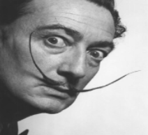
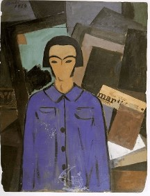
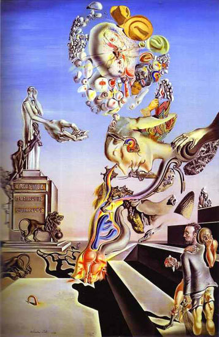

Salvador Dalí (1904-1989) foi
um pintor espanhol que se
destacou por suas composições
insólitas e desconexas. Com seu
bigode sinuoso e com disposição
para escandalizar foi um grande
representante da "Estética
Surrealista".

Salvador Domingo Dalí Domènech
nasceu em Figueres, Girona,
Espanha, no dia 11 de maio de
1904. Filho do tabelião Salvador
Dalí Cusi e de Felipa Domènech em
1922 muda-se para Madrid e vai morar
na Residência dos Estudantes, onde
fica amigo do poeta Frederico Garcia
Lorca e do futuro cineasta Luís Bunuel.
Ingressa na Academia de Belas Artes de
San Fernando.
Dalí chamava atenção com um figurino que
mostrava sua personalidade excêntrica: com
cabelos longos, gravata desproporcionalmente
grande e uma capa que ia até os pés. Nessa época,
realizava pinturas que passavam do realismo para
composições cubistas como o Autorretrato com
L’Humanité (1923).

Em 1925, Salvador Dalí realizou sua primeira mostra
individual na Galeria Dalmau, em Barcelona. Em 1926,
foi expulso da Academia de Artes por se desentender
com um professor e declarar que ninguém ali era
capaz de avaliá-lo. Nesse mesmo ano, viaja para Paris
e se encontra com Picasso. Faz uma segunda mostra
na Galeria Dalmau.
Em 1927 se instala em Paris e torna-se
membro oficial do movimento Surrealista,
liderado pelo poeta André Breton, que surgiu
como reação ao racionalismo

da sociedade ocidental. Usar o potencial do
subconsciente como fonte de imagens fantásticas
e de sonhos era o objetivo do grupo. Em 1929
volta à Espanha. Produz Jogo Lúgubre (1929).
Ainda em 1929, Dalí faz sua primeira mostra individual em
Paris, época em que se torna realmente um pintor surrealista.
Nessa época, Gala (Helena Ivanovna Diakonova) entrou na vida de
Dalí, depois de deixar o poeta Paul Éluard. Em 1930 muda-se com
Gala para o sul da França e depois para Cadaqués, na Espanha,
onde compra uma casa.
Em 1931 realiza a segunda mostra individual na
Galeria Pierre Colle, em Paris. Na mostra, entre
outras obras, Dalí apresenta a tela Persistência
da Memória (1931). A obra, adquirida por um colecionador
particular, em 1934, foi doada ao Museu de Arte Moderna de Nova Iorque.
Na década de 30, Dalí produziu o melhor de sua obra:
telas nas quais pessoas, animais, objetos e paisagens
se fundem em composições insólitas.
Sua pintura desconexa está bem representada na tela
Composição Surrealista com Figuras Invisíveis (1936),
onde no centro de uma paisagem desolada, uma cama e uma
poltrona surgem vazias, mas conservam os contornos dos
corpos ausentes.